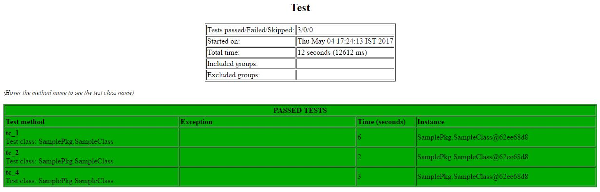

Test reports generation and verification
Once the execution of test cases are done, the reports for the tests will be generated. Jenkins will verify the reports and check for results, if majority of the test cases are failed then erroneous code will not be used for higher environment deployment.
Jenkins will share Test case execution reports with defined teams.
The code will be qualified to deploy in production environment only if it matches with execution pass criteria.
After successful execution of all the test cases, Jenkins will generate overall test report in workspace, under test suite folder. It has HTML report which shows the details of each and every test case passed or failed.

|